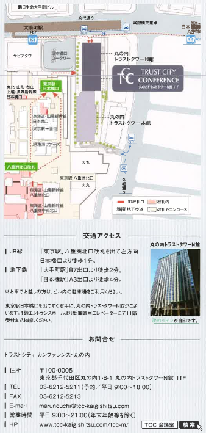

ProACT
実現に向けたアクティブ情報共有基盤と周辺技術
ProACT 実現に向けたアクティブ情報共有基盤と周辺技術
「センシングデータで知る・伝える・防ぐ」をテーマに、
ビッグデータの利活用と現場の杭、産学による防災への取り組み、また、その可能性を考えていきます。

- 目的
- アクティブ情報基盤構築に向けた、産学の取り組みをご紹介する。
- 日程
- 平成２６年１１月１２日（水）
１３：００～１６：３０ - 会場
- トラントシティ
カンファレンス・丸の内room１
東京都千代田区丸の内 1-8-1
丸の内トランスタワーN館 11階（Tel.03-6212-5211）
※東京都八重州北口改札を出て左方向、東京駅日本橋口より徒歩1分 - 主催
- 東京電機大学
株式会社リプロ - 協賛
- IEICE HPB研究会
- 参加費
- 無料
※事前登録制/会場収容人数によるお断りする場合がありますのでご了承ください。 - 参加希望の方はこちらからお申込ください。
- 参加希望の方は
E-mail:proact@cps.im.dendai.ac.jp
までご連絡ください。 - その他
- 意見交換会（参加費3,000円）
時間：１７：００～
場所：同ビル内
『串焼きと鶏料理 鳥どり トランスタワー内』 - お問い合わせ
- 
内容
- １３：００～１３：０５
- 開会にあたり（５分）
- 東京電機大学 情報メディア学科 准教授 岩井将行
基調講演
- １３：０５～１３：２５
- KDDI研究所 研究員 石塚宏紀「防災社会へ向けたビッグデータの利活用の可能性と安全性」（２０分）
第一部 災害対応とICT
- １３：２５～１３：４５
- SIP「レジリエントな防災・減災機能の強化」への取り組み（２０分）
- 東京電機大学研究推進社会連携センター 教授 小林亘
- １３：４５～１４：０５
- 災害時のコミュニケーションのあり方（２０分）
- 東京電機大学 情報環境学科教授 教授 武川直樹
第二部 センサ杭とモニタリング
- １４：０５～１４：２５
- 防災用環境計測システムに向けたUAVとセンサ杭の連携（２０分）
- 東京電機大学 未来科学部 ロボット・メカトロニクス学科 准教授 岩瀬将美
- １４：２５～１４：４５
- 崩壊実験報告（２０分）
- (独)防災科学技術研究所/アジア航測㈱/復権調査設計㈱
- １４：４５～１５：０５
- 杭から知る・伝える・防ぐ（２０分）
- 株式会社リプロ 東京事務所長 北原敏夫
- １５：０５～１５：２５
- 無人山岳モニタリングシステムとパノラマ技術（２０分）
- カディンチェ株式会社 代表取締役社長 青木崇行
- １５：２０～１５：３０
- 休憩（１０分）
第三部 情報共有
- １５：３０～１５：５０
- 人の移動の可能性モデルの検討（２０分）
- 東京大学 生産技術研究所 助教 伊藤昌毅
- １５：５０～１６：１０
- ユーザ参加型センシング（２０分）
- 東京電機大学 未来科学部 情報メディア学科 准教授 岩井将行
- １６：１０～１６：２０
- 質疑・ディスカッション（１０分）
- 座長：東京電機大学 未来科学部 情報メディア学科 准教授 岩井将行
- １６：２０～１６：２５
- 閉会にあたり（５分）
- 株式会社リプロ 代表取締役 岡田謙吾